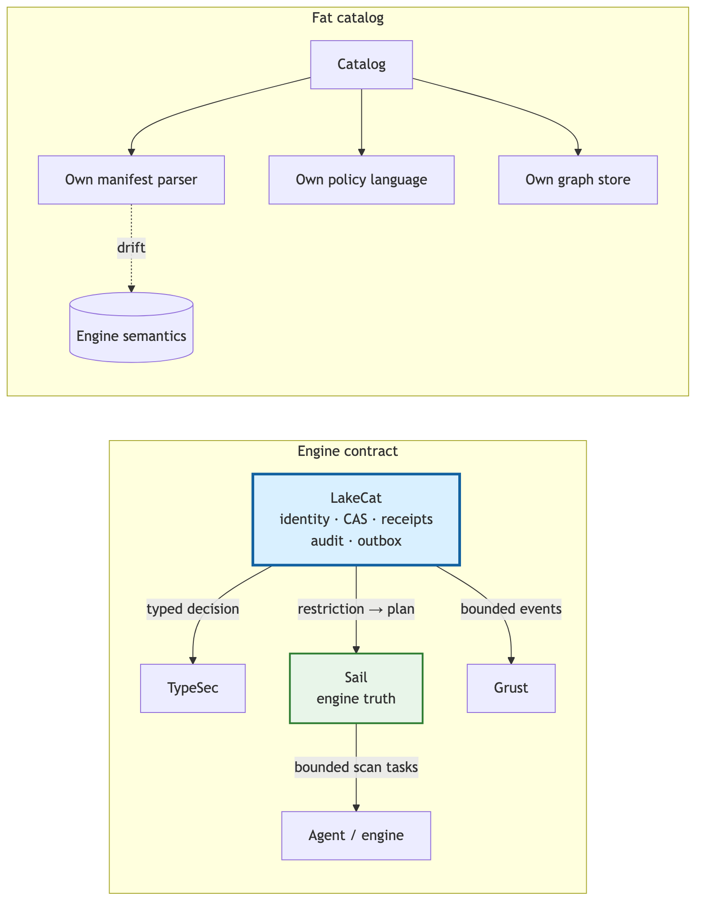

LakeCat’s documentation partitions every concept it uses into six categories, and the test for placing a concept is stated once: ask what breaks if a client knows nothing about LakeCat [5]. If a PySpark job cannot load, commit, or drop a table without the concept, it belongs to standard compatibility; if PySpark keeps working but operators, governed agents, or QueryGraph gain stronger evidence, the concept is an additive surface. One of the six categories is defined as follows:
Sail engine truth — table-format interpretation, metadata-as-data, scan planning, commit validation, and typed v4 behavior. The catalog binds its proof to engine truth rather than reimplementing the format.
We restate this as a principle and derive its obligations.
Engine truth. Iceberg table state is not a set of easy strings. A claim that “only these columns” may be read is meaningful only after it has been mapped through field ids, nested schema evolution, aliases, and projection rules. A claim that “only these rows” may be read is meaningful only after the predicate has been bound by the same expression system that will plan the scan. A claim that “these files” satisfy a scan is meaningful only after manifest metrics, residual predicates, partition transforms, delete files, sequence numbers, and snapshot context have been interpreted. The only component that does all of this and is exercised by real execution is the engine. Engine truth is therefore the principle that the interpretation of table state is authoritative only in the engine that plans and executes, and that any other component’s statement about table content is a binding to that interpretation, never a substitute for it.
The engine contract is the set of obligations a catalog accepts once it adopts engine truth. We name it here because the components below discharge it in different ways, and because it is the property the adversarial reviews tested most directly.
principal → tenant → warehouse → namespace → table,
request → decision → current pointer → CAS/idempotency,
accepted state → audit → outbox → replay admission. The
engine proves table work:
metadata → field ids → projection,
metadata → manifests/statistics → pruning,
metadata → deletes → row visibility,
metadata → scan tasks / commit validation. Neither proof is
complete alone; the record binds them.The most dangerous failure mode of a “smart” catalog is to become a
partial engine. It begins innocently—validate a schema here, expand a
manifest list there, peek at a format-version field—and
ends with a shadow implementation that is slower, less correct, and
unreusable. The engine contract forbids the first step.
The less obvious consequence is that a passive intermediary loses information. A pass-through catalog sees the table name, the pointer, the caller, and perhaps a credential request; the engine sees schema, manifests, statistics, deletes, and filters; governance sees policy; lineage sees an after-the-fact event. Each holds a shard of the truth, and the costs are concrete: policy is checked before access but not carried into planning; credentials are vended without a recorded reason for the exception; lineage says something happened but cannot bind to the governed plan, snapshot, policy, and metadata that produced it.
“Getting out of the way” therefore does not mean doing less. It means the catalog stands beside the request rather than in front of the data. It admits the request, obtains a typed decision, binds that decision to the current pointer and identity, asks the engine to turn the restriction into engine work, records the result, and steps aside. The stock client sees ordinary Iceberg REST. The governed agent receives bounded work—Sail-planned tasks with scope, TTL, projection, and predicate already bound—instead of broad credentials. The operator receives a transaction log. QueryGraph receives anchors it can accept as proof.

Figure 1. A fat catalog drifts from engine semantics by reimplementing them; a catalog under the engine contract binds its authority proof to the engine’s table proof and steps aside.
The ownership rule, stated once in the LakeCat design and reproduced here, fixes the boundary:
| Concern | Owner | LakeCat keeps only |
|---|---|---|
| Iceberg format, manifests, scan planning, pruning, delete handling, v4 | Sail | The call into Sail and the proof binding its result |
| Graph schema, taxonomy, traversal, stores, Cypher | Grust | The catalog-facing sink/projection boundary |
| Authorization, policy composition, capabilities, TypeDID, credential decisions | TypeSec | The request for a decision and the persisted receipt |
| Croissant/CDIF/OSI/ODRL/OpenLineage composition, agent workflows | QueryGraph | The governed bootstrap bundle it emits |
| Identity, tenancy, pointer CAS, idempotency, audit, outbox, replay | LakeCat | All of it — this is the thin catalog |
Two corollaries govern standardization. Iceberg metadata stays pristine: policy, graph, lineage, semantic-model, and agent state are derived control-plane records, never required custom metadata, so a table remains readable by tools that know nothing of QueryGraph. And the proper-noun test separates project choices from portable ideas: “use Rust,” “use Turso,” “use TypeSec” are choices; “reject idempotency drift; record redacted pointer history; emit transactional catalog-event identity; admit only scoped replay evidence; prove a governed scan was narrowed by an engine” are ideas any catalog could adopt [5].